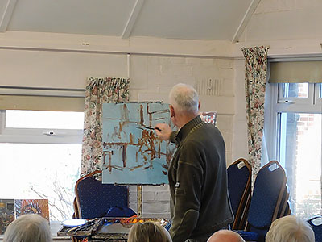
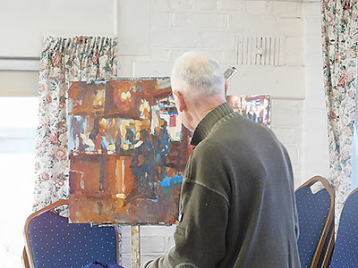
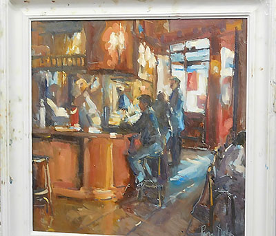

Click here to return to programme page
2020
Interior Scene with Figures in oils by Roger Dellar
What a great way to start the year. The demonstration was very well-attended, once again boosted by 12 guests.
A firm favourite of the Society, Roger shared some interesting stories from his past. One of the reasons he had a gentle touch with the brush on the support was his former career as a hairdresser. “You can‘t just yank some-one’s head around”. Perhaps more interesting was that he used to put in a full session of hairdressing in the morning before driving down to Ferring to demonstrate to the Society in the afternoon.
He shared a number of possible reference photographs with the audience. After narrowing it down to a choice of two, the overwhelming vote was for a scene in an Irish Bar. He had a square support roughly prepared with a bluish background. He stated he would use Winsor and Newton oil paints, and a faster drying alkyd white. Inexpensive paints, but Roger was confident they would achieve all he needed them to do. Zestit was to be used as the medium.
Initially he considered the colour range of the reference image and assessed it to be warm with an orange bias.

The first stage was to draw out the composition very roughly with a brush and a burnt sienna mix. He then blocked in the darks with lean paint. He stressed working initially with lean paint, and later moving on to fat (impasto) paint. It was also important to make the dark areas initially bigger than needed. Later cutting into the dark areas with thick light paint helped to avoid mud. A complimentary colour, Cerulean Blue, was introduced.

At this stage Roger introduced warm impasto paint to show the lights in the scene. Always he looked for somewhere else in the picture to use the same colour, helping to tie the painting together. Another thing he demonstrated was that the pressure on the brush, when applying the paint, influenced how the new paint reacted with paint already on the support. Hard pressure and it would blend, light pressure and the new colour would stand out.
After the break Roger started to work on the highlights, the stage of the painting he confessed he really enjoyed. His technique was to work all over the picture with areas of the same colour. He also used a shaper to scrape into the wet paint to help define the shapes he wished to portray.
Two quantities of white paint had been put down on the palette; one for mixing, the other kept clean for use in the highlights. A fan brush could be used to soften the edges of the impasto paint applied.
Finally Roger used a rigger brush to apply the fine highlights. He stressed that at all times he painted by moving his arm rather than just his hand.

By the close Roger had achieved a very striking image in his own unique style. Not a finished painting he said. It looked pretty good to a very attentive audience.